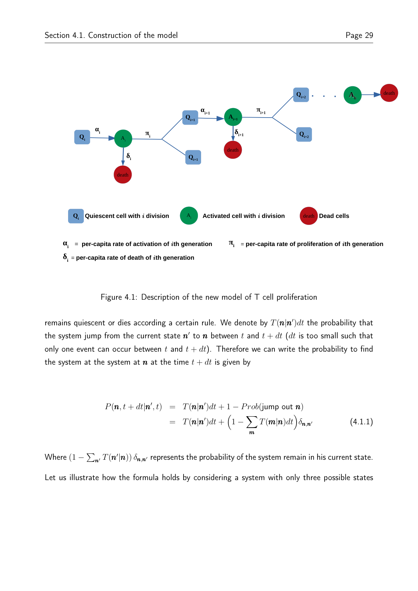

Welcome.
Computational Scientist | Applied Mathematician | Multiscale Modeller | Scientific Software Developer
I build mathematical and computational tools to understand complex biological systems — from metabolism and immune-cell dynamics to photosynthetic adaptation and browser-based scientific software.
One profile, four evidence tracks.
Instead of presenting a long autobiography, the portfolio separates the work into clear themes: scientific software, plant adaptation, metabolic modelling, immune-cell stochastic dynamics, and growth-mechanics / oscillatory biology.
Featured work
Clickable evidence cards. Open the tool, inspect the repository, read the paper, or download the underlying document.
Foko Lab / Chilperic ODE
Browser-native scientific modelling environment for ODEs, optimisation, steady-state systems, and stochastic simulations.


Photosynthesis climate adaptation
Thermo-hydraulic-biochemical modelling of C3–C4 plant adaptation under climate constraints.

Fatty-acid metabolism bistability
Mechanistic ODE model of fed/fasted metabolic switching and qualitative dynamics.

T-cell proliferation models
Stochastic master equation, PGF moments, and MLE framework for CFSE-type data.
Growth mechanics and metabolic oscillations
bioRxiv preprint on growth mechanics, metabolism, and oscillatory dynamics in growing cells.